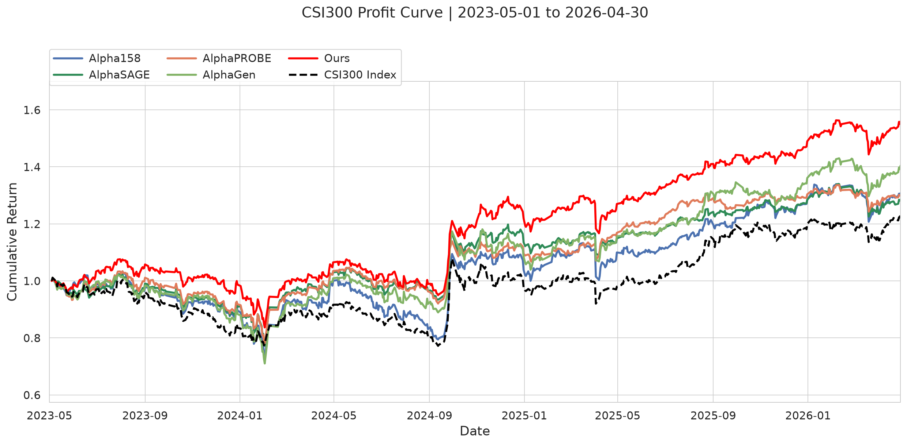

train_cf.py 端到端走读 CN Test · 2023-05 → 2026-04六阶段闭环流水线：加载种子 → 反事实诊断 → 机制证据 → 记忆 → 直接后代 → 父代替换，循环 10 轮；每轮得到的因子池交给 run_adaptive_combination.py 进行自适应回测。
start_pool.json 加载 50 个种子；冻结顺序与符号；分配 chain IDΔcf、C_pool、signal_distanceS(f|P) 下竞争每轮结束后，因子池 JSON 被喂给 run_adaptive_combination.py 以产出 Test 指标与收益曲线 PNG。
| 参数 | 默认值 | 说明 |
|---|---|---|
--instrument | csi300 | 也支持 sp500 |
--qlib-path | 环境变量 QLIB_PATH_CN/SP500，否则 data/qlib_data/... | 解析为绝对路径 |
--start-pool | start_pool.json | 50 个精选种子（冻结，不再重选） |
--rounds | 10 | 演化轮数 |
--seed, --cuda, --chunk-size, --horizon | 0 / 0 / 64 / 20 | numpy/torch 随机种子；GPU 编号；评估分块大小；前向收益天数 |
--pool-capacity, --parents | 50 / 5 | 因子池始终保持 |P|=50；每轮父代数 |
--max-nodes, --max-depth, --max-backtrack | 60 / 10 / 100 | AST 与历史回溯上限 |
--llm-timeout, --diagnosis-workers | 180 / 5 | 单次调用超时（秒）；并发 LLM 诊断数 |
--alpha, --beta, --gamma, --cost-weight | 50 / 800 / 2 / 2 | 打分函数 S(f|P) = α|R| + β·C_pool + γ·D + λ·(1−cost) 中的权重 |
--temperature, --correlation-threshold | 0.5 / 0.8 | LLM 温度 T；子代须满足 1−D ≤ 0.8（相对同伴） |
--n-factors | 20 | 最终组合步骤中的 top-K |
--no-cf-evidence, --no-pool-credit, --no-memory | off | 消融开关 |
--test-only | — | 仅对已保存的因子池重新跑回测 |
解析参数后加载 .env（提供 OPENAI_API_KEY、OPENAI_BASE_URL、OPENAI_MODEL_NAME）；为 numpy / torch 设定随机种子；在 data/cf_logs/ 下创建日志目录。
读取 Qlib 日日历，截取 Train = 2015-01-01 → 2021-12-31，随后构造一个带 max_backtrack_days = 100 额外历史的 StockData 窗口。校验日历对齐，丢弃 bak DataFrame，并构造前向收益标签：
target[t] = close[t+h] / close[t] - 1, h = --horizon = 20
mask out: NaN, non-finite, close ≤ 0 (either side)
print(f"{split}: {len(target)} labelled days, {data.n_stocks} stocks")SPLITS = {"train": ("2015-01-01", "2021-12-31")}。Test / Valid 窗口由 run_adaptive_combination.py 拥有，AlphaCME 从不读取它们。
AlphaCFPool(data, target, args) 缓存 {expression → (signal, reward, cost)}，计算 label_days（Train 中至少有 2 个有限且非常量标签的日期），并对外暴露以下方法：
| 方法 | 返回 | 作用 |
|---|---|---|
evaluate(expr) | {signal, reward, cost} | 将数据分块得到信号张量；排序到 [-0.5, 0.5]；与目标逐日 Spearman；reward = label_days 上的均值（未定义 IC → 0）；cost 为换手率代理 |
utility(exprs) | U(P) | 在完整 Train 上拟合 OLS 权重 → 合成信号 → 带符号的日度 IC → 取均值 |
correlation(a, b, abs) | ρ | 两个缓存信号在日度 Spearman 上的均值 |
equivalent(a, b) | bool | 有限掩码相同，且排序在 1e-6 内相等（或整体反向） |
signal_distance(a, b) | [0,1] | 在扁平化排序信号上计算 1 − q·|cos|，其中 q = 掩码交集/并集 |
replace_parent(p, kids) | 决策字典 | 门控与打分步骤（见 §6） |
AlphaCFTrainer(pool, args, log_dir) 初始化 LLM 客户端（OPENAI_API_KEY/BASE_URL，timeout=llm_timeout，max_retries=0）、访问计数器、空的 memory，以及 factor_ids / chain_ids 映射。
seeds = json.loads(Path(args.start_pool).read_text())["exprs"] # 50 个公式
trainer.initialize(seeds)
├─ 遍历每个 seed：evaluate() → 缓存；若无效或 reward < 阈值则抛错
├─ self.pool.initialize(candidates) # 保留顺序与符号
├─ factor_id = "f0", "f1", ...
├─ chain_id = 与 factor_id 相同 # 50 条独立链路
├─ self.memory[chain_id] = []
└─ self.lineage.append(round=0, outcome="seed", ...)
self.save() # 写出 pool_0.json + memory.json + lineage.json随后 on_round(0) 会在 pool_0.json 上触发 test()（§8），生成初始的 Test 指标行。
pool_.json）{
"split": "train",
"exprs": ["...", "..."], // 50 个公式，按因子池顺序
"weights": [...], // 完整 Train 上的带符号 OLS 系数
"metrics": [{"reward":..., "ic":..., "cost":..., ...}, ...],
"utility": 0.1234, // U(P) 在完整 Train 上的值
"factor_ids": ["f0", "f1", ...], // 当前成员 ID
"chain_ids": ["f0", "f1", ...], // 种子世系 ID（跨轮稳定）
"visits": {"": , ...}
} for step in 1..N:
started = time.monotonic()
parents = self.select_parents() # §5.1
utility = self.pool.utility()
evidence = [] # 诊断结果
contexts = [self.diagnosis_context(p) for p in parents]
with ThreadPoolExecutor(max_workers=diagnosis_workers) as ex:
reqs = [ex.submit(self.ask, PROMPT_DIAGNOSIS, c) for c in contexts]
for parent, req in zip(parents, reqs):
evidence.append(self.diagnose(parent, utility, req.result())) # §5.3
previous_children, added = [], []
for parent_expr, parent_record in zip(parents, evidence): # 串行
children, details = self.evolve(parent_record, previous_children) # §5.4
previous_children.extend(str(c) for c in children)
decision = self.pool.replace_parent(parent_expr, children) # §6
# bookkeeping：factor_ids, chain_ids, lineage, memory
self.save() # pool_{step}.json
on_round(step) # → test() 子进程 + res.txt + adaptive_combination.png
print(f" {len(prev)} offspring, {len(added)} replaced, {dt:.1f}s")contrib[i] = U(P) − U(P \ {exprs[i]}) # OLS 删除贡献，完整 Train
low_pool = 按 contrib 取下半部分
parents = random.sample(low_pool, k // 2) ++ random.sample(others, k - k//2)
shuffle(parents)
self.visits[expr] += 1 # 用于后续轮次的多样性按删除贡献挑选，而非单因子的 RankIC；低贡献者与随机其它成员等比例混合，因此热门或较强的因子不会被自动反复选中。
parent = str(parent)
reward = pool.evaluate(parent)["reward"]
previous = 最近一条历史中的 "parent" 快照（缺省为 {}）
nodes = [(path, expr), ...] 对应 walk(parent) 路径上的节点
cf_enabled = not args.no_cf_evidence
limits = {nodes, depth, lookback}调用 PROMPT_DIAGNOSIS（LLM）。Prompt 要求返回一个 JSON 对象，包含：
understanding：≤ 3 句话（数学行为、临时性经济假设、有效性条件）mechanisms[]（≤ 5 个），每项含 path、description、replacement、reason对每个机制（按提议顺序，重新标记为 m1, m2, …）：
node = at(parent, path) # 定位子树
if not no_cf_evidence:
changed = ablate(parent, mechanism, args) # 在 path 处应用 replacement
row["counterfactual"] = str(changed)
row["delta_cf"] = |R(changed)| − |R(parent)|
row["signal_distance"] = pool.signal_distance(parent, changed)
row["coverage_change"], row["common_rank_correlation"] 来自 pool.signal_comparison(...)
if not no_pool_credit:
peers = pool.exprs 去掉当前 parent
row["pool_credit"] = U(peers + [changed]) − U # 完整 Train OLS
record(mechanism=...)
三项证据（与 LLM 看到的保持完全一致；null 表示未测量，而非 0）：
| 符号 | 定义 | 含义 |
|---|---|---|
Δcf | |R(f')| − |R(f)| | < 0 → 编辑损害了单因子表现 |
C_pool | U(P_{−f} ∪ {f'}) − U(P)，在完整 Train 上 | > 0 → 编辑提升了因子池效用 |
signal_distance | 1 − q·|cos(a,b)|，q = |M∩M'|/|M∪M'| | 0 → 排序等价（含整体反向） |
now + 3 × llm_timeout；APIConnectionError 或 HTTP 408/409/429/5xx 可重试；其它错误立即抛出… mechanisms 或 offspring）必需存在；understanding/updated_understanding 非空；≤ 5 项；字符串字段非空；演化时：evidence_refs ⊆ 当前机制 ID ∪ []round_.jsonl（llm_request、llm_response、llm_error、invalid_llm_response、llm_budget_exhausted）对每条链路，持久化 {parent, decision} 字典的完整有序历史，每条记录包含父代的 understanding、证据行、updated_understanding、所有提议、资格与选择判定、以及任何因子池新增。下一次演化调用会使用完整历史（除非指定 --no-memory）。
单次 LLM 调用，PROMPT_EVOLUTION 返回：
{
"updated_understanding": "≤ 3 句话，引用当前 m-ID ...",
"offspring": [
{"expression": "Div(Sub($close,$open), Add($volume, 1.0))",
"evidence_refs": ["m2"], // 或 [] 表示探索
"description": "替换…"}, ...] // 0..5 个
}对每个子代：parse → validate → evaluate；与当前因子池及本轮已生成的子代去重；记录详情（description、evidence_refs）。
index = parent 在 self.exprs 中的位置
peers = pool 中除该 parent 之外的因子
children = 唯一且未在 pool 中的子代
diversity(e) = 1 − max_{g∈peers} |ρ(g,e)| # 未测量 → 1.0
c_pool(e) = U(peers + [e]) − U(pool) # parent 自身为 0
weights = [α, β, γ, cost_weight] # 原始值，不做 min-max
rows[m] = [|R(m)|, c_pool(m), diversity(m), 1−cost(m)]
scores = rows @ weights
# ── 门控 ──
correlation_ok = True # parent
= 1 − row[2] ≤ correlation_threshold # 子代
credit_ok = True # parent
= c_pool(kid) > 1e-6 # 子代
# ── 等价分组 ──
# 有限掩码相同且排序在 1e-6 内相等（或整体反向）
# 每组保留复杂度最低的 AST（并列时：先按提议顺序，parent 优先）
representatives = sorted(allowed, by complexity) → 每等价类的首个
parent_rep = 代表成员与 parent 等价的那个
best = score 最大的代表（并列：节点数更少、index 更小）
selected = best if scores[best] > scores[parent_rep] else parent_rep
winner = members[selected] (若为 None → 保留 parent)
# 写入：
self.exprs[index] = winner if winner is not None
decision = {parent, parent_score, parent_group_score, reason,
child, candidates:[{expression, reward, complexity, max_correlation,
pool_credit, cost, signal_distance, score,
correlation_ok, credit_ok, representative, eligible}原因按优先级排列：score_improvement → equivalent_simplification → no_score_improvement → correlation_threshold → pool_credit_threshold → no_new_offspring。
决策会追加到 memory[chain_id] 与 lineage；若子代胜出，则获得新的 factor_id 并继承父代的 chain_id，因此每个种子的完整世系在所有轮次中都可追溯。
S(f|P) = α·|R| + β·C_pool + γ·D + λ·(1−cost)| 组成 | 默认值 | 取值范围 | 说明 |
|---|---|---|---|
|R(f)| | α=50 | [0,1] | 完整 Train 上的绝对值带符号 RankIC |
C_pool(f|P) | β=800 | ℝ | 用该因子替换 parent 时的 ΔU；带符号 |
D(f,P) = 1 − max|ρ| | γ=2 | [0,1] | 相对同伴的多样性（不含自身） |
1 − C_cost(f) | λ=2 | [0,1] | 换手率代理 = (1 − mean ρ(f_t, f_{t−1})) / 2 |
各组成均使用自然尺度——不做 min-max 归一化，也不按轮次重新校准；多样性与贡献度始终在 P_{−f} 上评估。
每轮结束后，对每个保存的 pool_，主进程会以子进程方式启动 run_adaptive_combination.py：
subprocess.run([sys.executable, "run_adaptive_combination.py",
"--expressions_file", pool_.json,
"--instruments", args.instrument,
"--train_end_year", "2021",
"--label_days", str(args.horizon),
"--cuda", str(args.cuda),
"--seed", str(args.seed),
"--n_factors", str(args.n_factors),
"--chunk_size", str(args.chunk_size),
"--use_weights", "True",
"--metrics_file", metrics.json],
cwd=project_root, env=env, check=True)
# 将 {round, dataset, **metrics} 行追加到 data/cf_logs//res.txt
history = pd.read_json(res.txt, lines=True)
plot IC and RET over rounds → adaptive_combination.png (dpi=150) 硬性要求：JSON 必须包含 "split": "train"，否则 test() 会抛错——Test 时段的因子池不会通过该脚本重新评估。
| 路径 | 写入时机 | 内容 |
|---|---|---|
args.json | 启动时 | 解析后的 CLI 命名空间 |
pool_.json | 初始化后及每轮结束后 | exprs / weights / metrics / utility / factor_ids / chain_ids / visits |
memory.json | 每轮结束后 | {chain_id: [{parent, decision}, ...]} |
lineage.json | 每轮结束后 | 所有决策的扁平列表：round、parent、child、candidates、reason、ID |
round_.jsonl | 每轮（追加） | 事件：factor、invalid、parent_selection、llm_request/response/error、invalid_llm_response、mechanism、invalid_mechanism、understanding、proposal、replacement、update、llm_budget_exhausted |
res.txt | 每次 test() 后 | 跨轮次的 JSONL 指标历史 |
adaptive_combination.png | 每次 test() 后 | 各轮的 IC 与 RET 曲线 |
python train_cf.py --instrument csi300 \
--rounds 10 --seed 0 --cuda 0python train_cf.py \
--test-only data/cf_logs//pool_10.json 参数从同目录下的 args.json 恢复；--cuda 与 --qlib-path 可被覆盖。
所有方法均通过 run_adaptive_combination.py 在相同的 Train / Test 切分下评估；数据全部取自 result.md。
| 方法 | IC ↑ | IC_STD ↓ | ICIR ↑ | RIC ↑ | RIC_STD ↓ | RICIR ↑ | RET ↑ | RET_STD ↓ | RETIR ↑ | RET_SR ↑ | RET_MDD ↓ |
|---|---|---|---|---|---|---|---|---|---|---|---|
| AlphaCME | 0.0487 | 0.1519 | 0.3207 | 0.0479 | 0.1527 | 0.3133 | 0.1828 | 0.0114 | 0.0662 | 1.0503 | 0.2247 |
| AlphaPROBE | 0.0465 | 0.1991 | 0.2337 | 0.0632 | 0.2081 | 0.3036 | 0.0987 | 0.0096 | 0.0425 | 0.6740 | 0.2450 |
| AlphaGen | 0.0379 | 0.1499 | 0.2527 | 0.0407 | 0.1721 | 0.2367 | 0.1318 | 0.0122 | 0.0447 | 0.7094 | 0.3071 |
| AlphaSAGE | 0.0363 | 0.1545 | 0.2349 | 0.0493 | 0.1602 | 0.3080 | 0.0940 | 0.0106 | 0.0368 | 0.5845 | 0.2458 |
加粗 = 最优，下划线 = 次优。↑/↓ 表示期望方向。AlphaCME 在 11 个指标中赢得 8 个且从未垫底；在 IC_STD 上并列次优。

CSI300 累计收益曲线（2023-05 → 2026-04）。红线 Ours (AlphaCME) 始终位于其它基线之上，期末累计收益约 1.55，远超 CSI300 Index（黑色虚线，约 1.22）。
源文件：train_cf.py、src/alpha_cf/trainer.py、src/alpha_cf/alpha_pool.py、src/alpha_cf/prompt.py、src/alpha_cf/expression.py、run_adaptive_combination.py。指标来自 result.md。